System stats à la carte
Build your stats overview with a selection of pages from bar graphs and waterfalls to big, bold gauges. Everything configured via a web UI on your computer and pushed to your badge(s) at the press of a button.
-
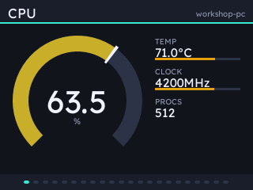
dial - one reading as a gauge, with the rest read out beside it. -
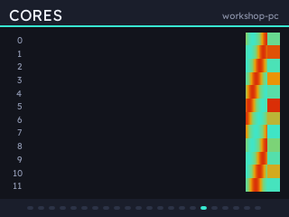
waterfall - a list field as lanes over time, interpolated between polls at 28fps. -
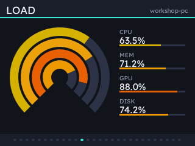
rings - up to four readings as concentric gauges, each coloured by its own value. -
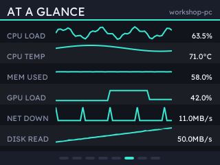
spark - six readings at once, name, current value and recent history a row each. -
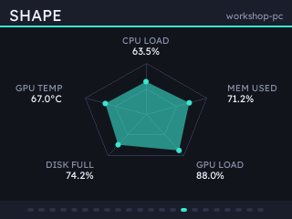
radar - the shape of the load, not its size. -
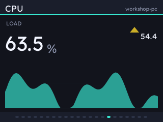
trend - one big reading, which way it is going, and where it has been. -
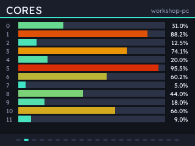
bars - a core each. -
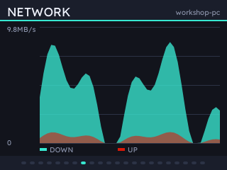
graph - two series over time.
Both ends of it
Two pages report a machine instead of a reading.
-
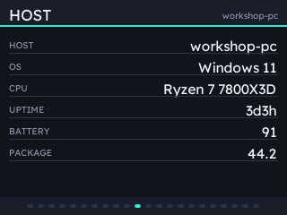
text - the host: its name, OS, processor and how long it has been up. -
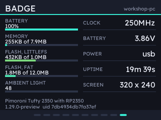
badge - the badge itself: battery, memory, flash, ambient light and what it is running. The one page whose numbers do not come from the host.
Sixteen themes, and forty-eight accents
Everything is drawn as vector shapes taking their colours from one table. Every widget is coloured from a selection of finessed themes, or from four you can tune yourself.
-
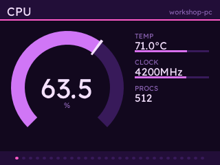
Vapor -
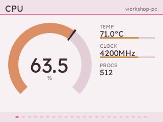
Sakura -
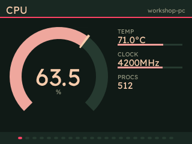
Watermelon -
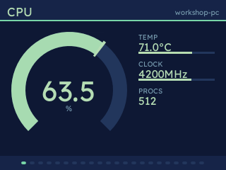
Shell -
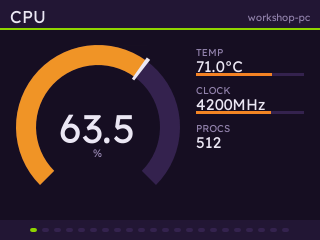
Unit-01 -
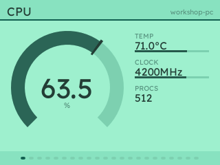
Luminescence
Extensions
Manage and install extensions with ease. We've built a beautiful clock as an example: a Swiss railway face whose second hand sweeps at the badge's frame rate. It's joined by dots, squircle, digital and seven-segment LCD faces, all with weather from Open-Meteo.
-
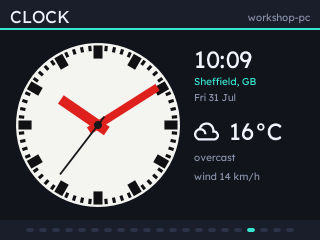
Railway -
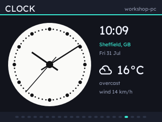
Dots -
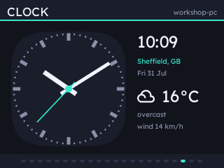
Squircle -
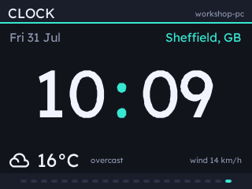
Digital -
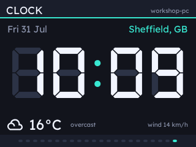
Digital LCD
statsbadge ext add clock
statsbadge install # pushes the badge-side code tooThen add a Clock page in the config UI.
ext add keeps the list of extensions beside your config. ext on its own to see what's installed.
Something to look at
Two more extensions draw the ISS transit and recent earthquakes over crisp, colour-themed world maps. Both take open feeds, so there is no key and no account to set up.
-
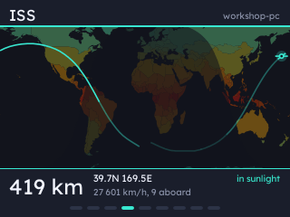
ISS - where the station is, an orbit of ground track either side of it, and the day and night terminator drawn from the sub-solar point. -
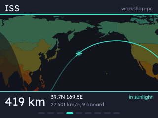
Or closed in, travelling with it. Altitude, speed and the crew aboard come with the position. -
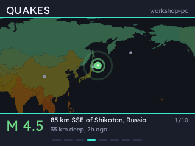
Quakes - recent events from USGS, the reticle coloured by magnitude. -
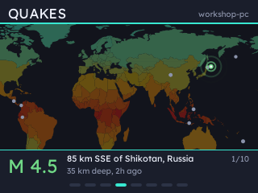
The page cycles through the set on its own, zooming out to cross an ocean.
statsbadge ext add iss quakes
statsbadge install # pushes the badge-side code tooThen add an ISS or a Quakes page in the config UI.
On the badge
| Button | What it does |
|---|---|
| UP/DOWN | previous/next page |
| A B C | whatever the host has bound them to, if anything |
| HOME | open the hosts menu |
| HOME, held | leave the app |
Pair with more than one machine and the badge uses whichever it can reach, switching by itself when the current one goes quiet. Credentials are keyed on a server id, following hosts across networks and address changes.
What it reports
A field the host cannot measure is null, and pages that need it are dropped.
- cpu
- load, per-core, temperature, clock, load average, processes
- mem
- used, total, percentage, swap
- gpu
- load, temperature, VRAM, power, clock, fan
- net
- up/down rate and totals, interface
- disk
- used, total, read/write rate
- power
- battery, charging, package watts
- fans
- RPM
- sys
- host, OS, CPU name, uptime
Most of it comes from psutil, which answers the same questions on every platform. Though there are some quirks:
- NVIDIA cards are read through NVML, the library behind
nvidia-smi. Add it withstatsbadge[nvidia]. - Linux takes CPU temperatures and fan speeds from the kernel's hwmon sensors, and an AMD card straight from the driver's files under
/sys. - macOS asks
ioregabout the GPU. Temperatures, fans and package power need root, so they stay off unless you run with--powermetrics. - Windows tells an ordinary program nothing about temperatures without a driver, so those come from LibreHardwareMonitor's web server.
Install
A server on the host measures things and serves them; the badge fetches and draws them.
Then open http://127.0.0.1:8420/ to pick screens, themes and button bindings. No cable? statsbadge pair and the badge finds the host by itself.
The server itself never runs as root: on macOS it spawns sudo -n powermetrics, so that flag wants a passwordless sudo rule for that one command line and nothing wider. Windows reads its temperatures and fans from LibreHardwareMonitor, so leave it running with Options > Remote Web Server > Run. Take it from the project's own releases: the similarly named .com is not theirs.
Security
Plain HTTP on the LAN, with every request signed HMAC-SHA256 against a shared secret from pairing, and a counter the host refuses to accept twice. So a command cannot be forged or replayed, and an unpaired device on the network learns nothing. The config API is bound to loopback because it can mint secrets.